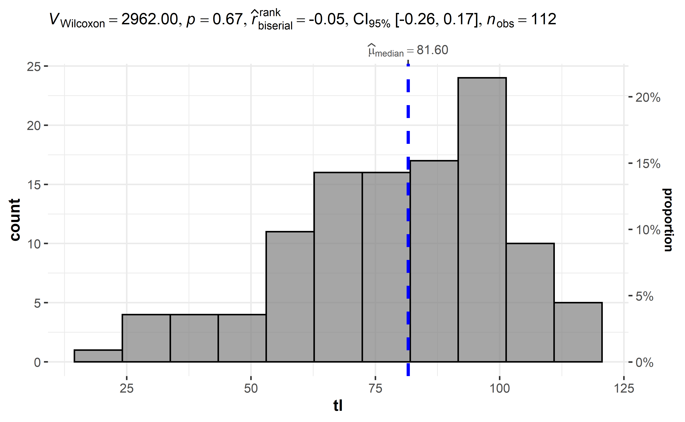

#> Descriptive Statistics
#> chinook
#> N: 112
#>
#> tl w
#> ----------------- -------- --------
#> Mean 78.86 6.68
#> Std.Dev 21.89 4.37
#> Min 18.00 0.10
#> Q1 65.30 2.95
#> Median 81.60 6.40
#> Q3 94.75 9.55
#> Max 120.10 17.90
#> MAD 21.57 5.04
#> IQR 29.07 6.50
#> CV 0.28 0.66
#> Skewness -0.55 0.52
#> SE.Skewness 0.23 0.23
#> Kurtosis -0.19 -0.50
#> N.Valid 112.00 112.00
#> Pct.Valid 100.00 100.0013 One sample test
13.1 Introduction
In a previous article, we showed how to do a two-sample Wilcoxon test in R. Remember that there are actually two versions of this test:
The Mann-Whitney-Wilcoxon test (also referred as Wilcoxon rank sum test or Mann-Whitney U test), used to compare two independent samples. This test is the non-parametric version of the Student’s t-test for independent samples.
The Wilcoxon signed-rank test (also referred as Wilcoxon test for paired samples), used to compare two paired samples. This test is the non-parametric version of the Student’s t-test for paired samples.
In another article, we also showed how to do a one-sample t-test by hand and in R. This test is used to determine whether the mean of a measurement variable is different from a specified value (a value that you specify based on your beliefs or a theoretical expectation for example). Since it is a parametric test, the data should follow a normal distribution (or sample size should be large enough (i.e., above 30), thanks to the central limit theorem) for the results to be valid.
Unlike the one-sample t-test, the one-sample Wilcoxon test (also referred as the one-sample Wilcoxon signed-rank test) is a non-parametric test, meaning that it does not rely on data belonging to any particular parametric family of probability distributions. Non-parametric tests usually have the same goal as their parametric counterparts (in this case, compare data to a given value). Nonetheless, they do not require the assumption of normality and they can deal with outliers and Likert scales.
In this article, we show when to perform the one-sample Wilcoxon test, how to do it in R and how to interpret its results. We will also briefly show some appropriate visualizations.
13.2 When?
The one-sample Wilcoxon test is used to compare our observations to a given default value—a value that you specify based on your beliefs or a theoretical expectation for example. In other words, it is used to determine if a group is significantly different from a known or hypothesized population value on the variable of interest.
Since the test statistic is computed based on the ranks of the difference between the observed values and the default value (making it a non-parametric test), the one-sample Wilcoxon test is more appropriate than a one-sample t-test when the observations do not follow a normal distribution.
The goal of this test is to verify whether the observations are significantly different from our default value. In terms of null and alternative hypotheses, we have (for a two-tailed test):
H0:H0: location of the data is equal to the chosen value
H1:H1: location of the data is different from the chosen value
In other words, a significant result (i.e., a rejection of the null hypothesis) suggests that the location of the data is different from the chosen value.
Note that some authors suggest that this test is a test of the median, that is (for a two-tailed test):
H0:H0: the median is equal to the chosen value
H1:H1: the median is different from the chosen value
However, this is the case only if the data are symmetric. Without further assumptions about the distribution of the data, the one-sample Wilcoxon test is not a test of the median but a test about the location of the data.1
Note that although the normality assumption is not required, the independence assumption must still be verified. This means that observations must be independent of one another (usually, random sampling is sufficient to have independence).
13.3 Data
For our illustration, suppose we want to test whether the scores at an exam differ from 10, that is:
The one-sample Wilcoxon test will tell us whether the total length are significantly different from 81 or not (and thus whether they are different from 81 in the population or not):
#>
#> Wilcoxon signed rank test with continuity correction
#>
#> data: tl
#> V = 2962, p-value = 0.7
#> alternative hypothesis: true location is not equal to 81Based on the results of the test, (at the significance level of 0.05) we do not reject the null hypothesis, so we do not reject the hypothesis that the mean total length of chinook is 81, and we cannot conclude that the total length are significantly different from 81 (p-value = 0.7).
By default, it is a two-tailed test that is done. As for the t.test() function, we can specify that a one-sided test is required by using either the alternative = "greater" or alternative = "less argument in the wilcox.test() function.
#>
#> Wilcoxon signed rank test with continuity correction
#>
#> data: tl
#> V = 2962, p-value = 0.7
#> alternative hypothesis: true location is greater than 81In this case, we still do not reject the hypothesis that scores are equal to 10 and we cannot conclude that scores are significantly higher than 10 (p-value = 0.189).
If you are a frequent user of the blog, you know that I like to present results of a test directly on a plot. This allows me to visualize the data and conclude the test in a concise manner. This is possible thanks to the gghistostats() function within the ggstatsplot package:

The histogram shows the distribution of the scores and results of the test is shown in the title of the plot. As you can see, results of the test are the same, that is, there is not enough evidence in the data to conclude that total length are significantly different from 81 (pp-value = 0.67).